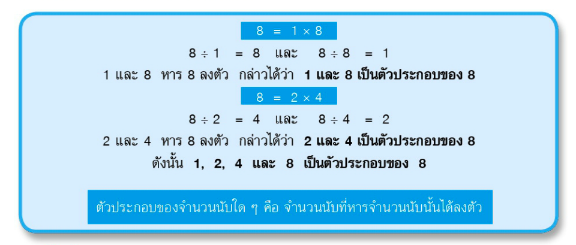
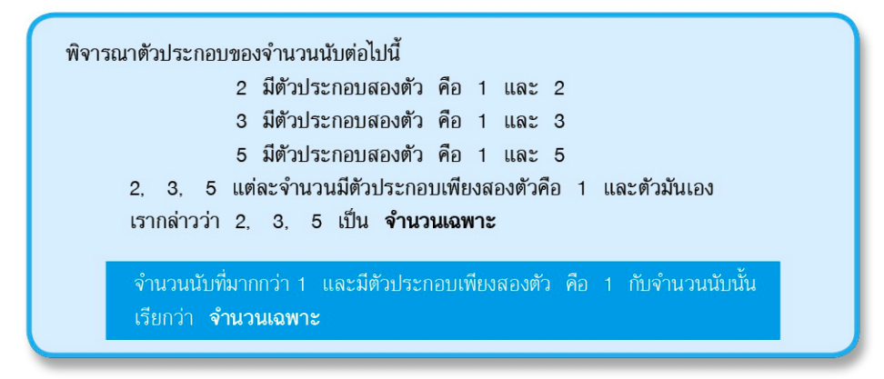
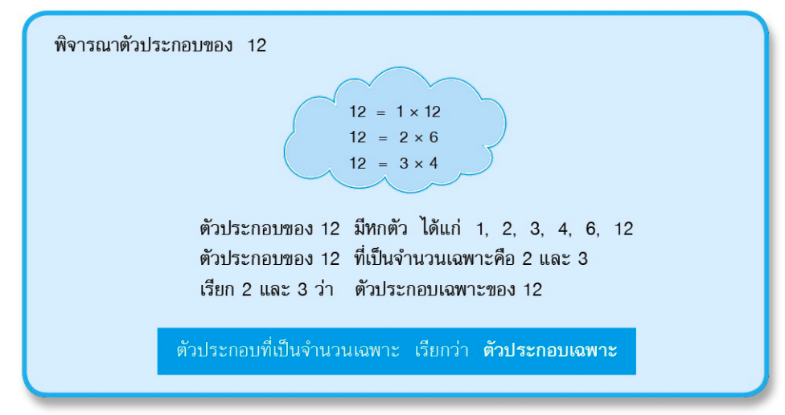
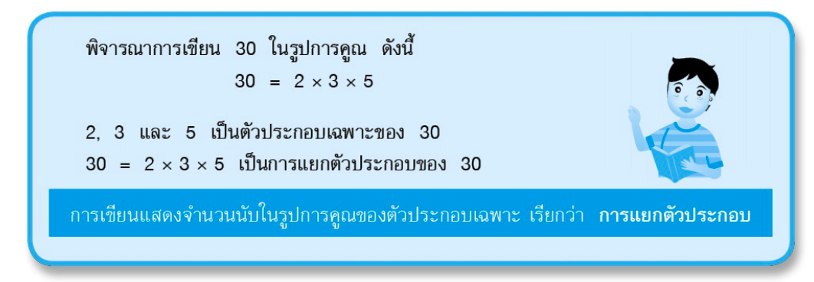
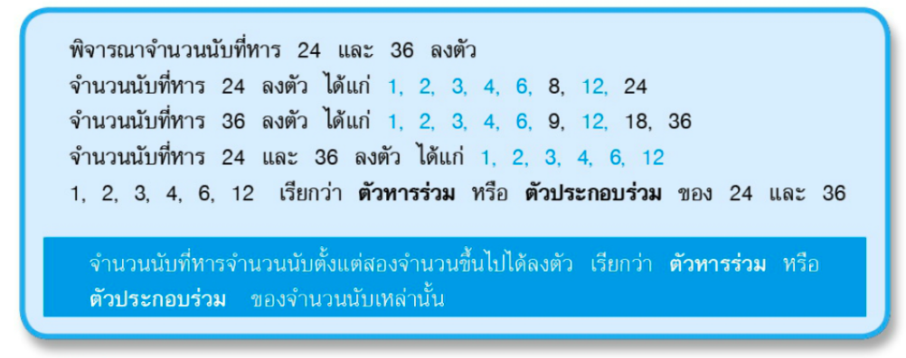
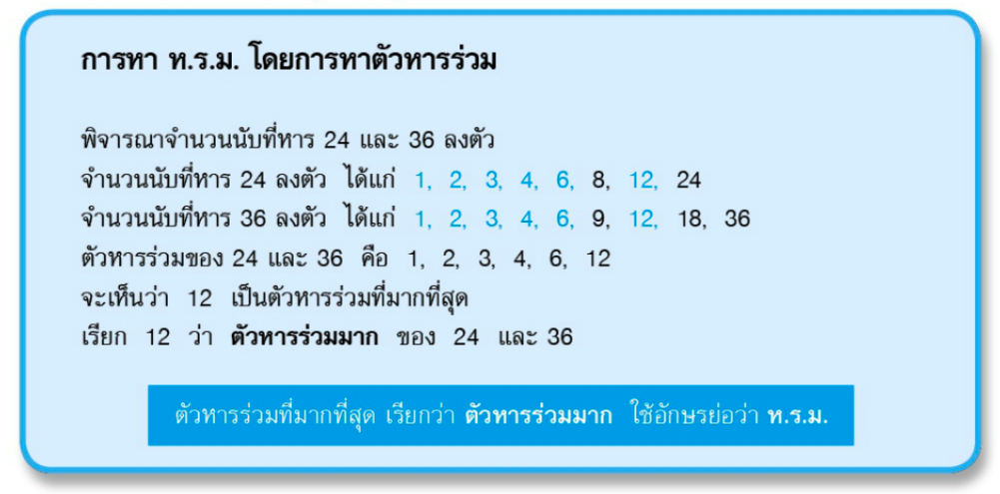
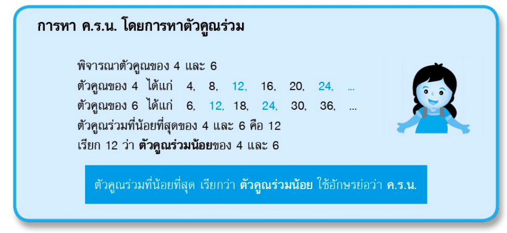

Math
46
หน้าแรก
บทเรียน
แบบฝึกหัด
ผู้จัดทำ
ประถมศึกษาปีที่ 6
การแยกตัวประกอบ, ตัวหารร่วม, ห.ร.ม., ค.ร.น.
ตัวประกอบ
หมายถึง จำนวนนับที่หารจำนวนนับที่เรากำหนดให้ได้ลงตัว เช่น a จะเป็นตัวประกอบของ b ก็ต่อเมื่อ b หารด้วย a ลงตัว 
จำนวนเฉพาะ
หมายถึง จำนวนที่มีตัวประกอบเพียง 2 ตัว คือ 1 กับตัวของมันเอง 
ตัวประกอบเฉพาะ
หมายถึง ตัวประกอบของจำนวนนับใดที่เป็นจำนวนเฉพาะ 
การแยกตัวประกอบ
หมายถึง การเขียนในรูปการคูณของตัวประกอบเฉพาะของจำนวนนับนั้นๆ 
ตัวหารร่วมมาก
หมายถึง จำนวนที่สามารถหารจำนวนนับที่กำหนดให้ตั้งแต่ 2 จำนวนลงตัว 
หารร่วมมาก [ห.ร.ม.]
หมายถึง ตัวหารร่วมที่มีค่ามากที่สุด 
คูณร่วมน้อย [ค.ร.น]
หมายถึง ตัวคูณร่วมที่มีค่าน้อยที่สุด 